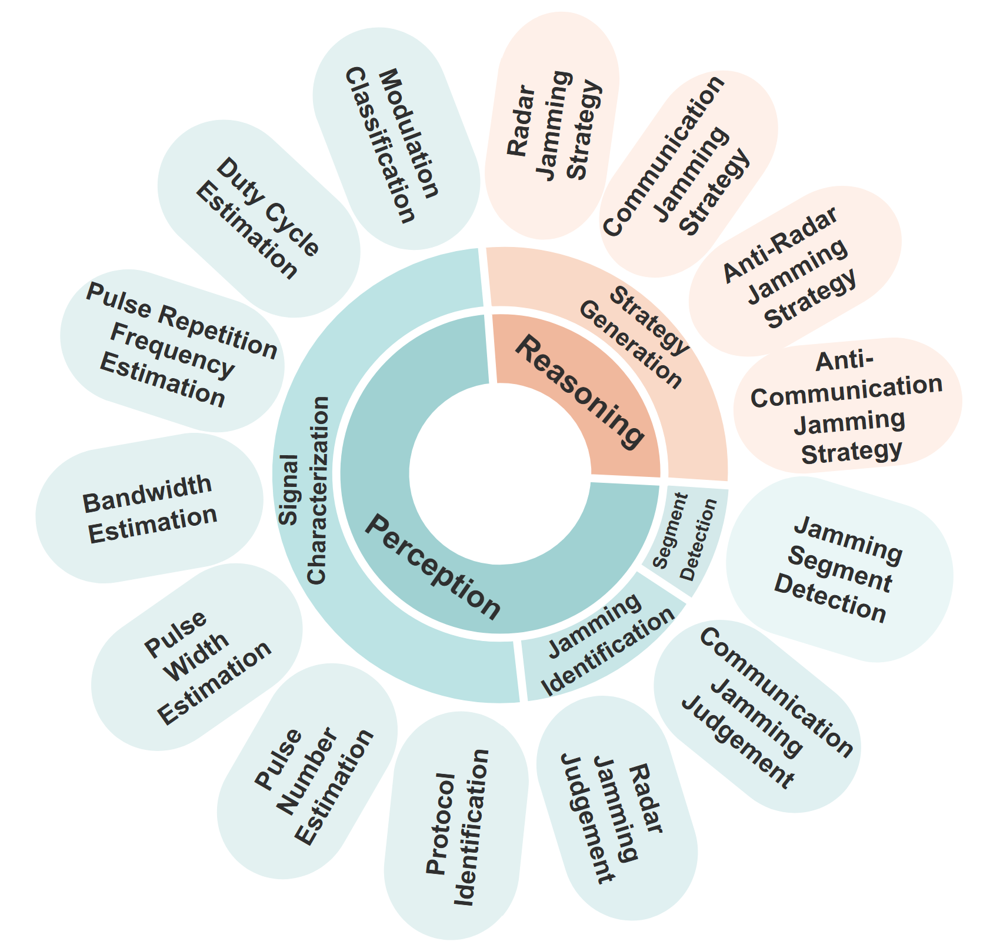
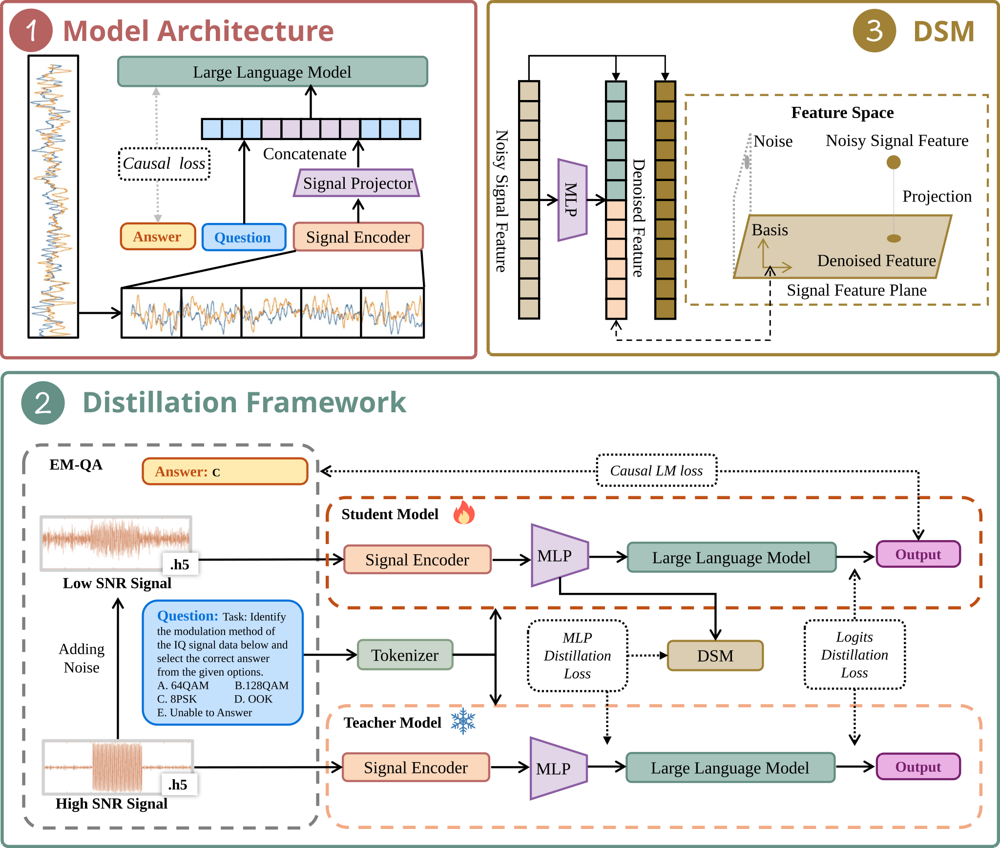
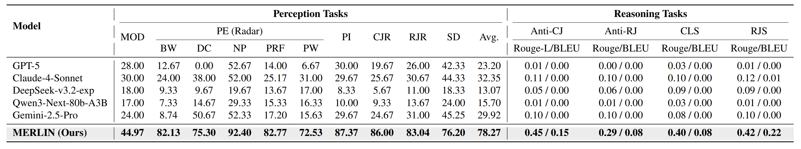

MERLIN: Building Low-SNR Robust Multimodal LLMs for Electromagnetic Signals
National University of Defense Technology | Beihang University | Beijing Information Science and Technology University
Artificial Intelligence Institute of China Electronics Technology Group Corporation

Abstract
The paradigm of Multimodal Large Language Models (MLLMs) offers a promising blueprint for advancing the electromagnetic (EM) domain. However, fully realizing the MLLM potential requires overcoming three main challenges: (1) Data scarcity of high-quality paired EM signals and text, (2) the absence of comprehensive benchmarks, and (3) critical performance degradation in low Signal-to-Noise Ratio (SNR) environments.
To address these challenges, we introduce a tripartite contribution:
- EM-134K: A large-scale dataset comprising over 134K EM signal-text pairs.
- EM-Bench: The most comprehensive benchmark featuring diverse downstream tasks from perception to reasoning (over 4,200 QA pairs).
- MERLIN: A novel two-stage training framework explicitly designed to enhance model robustness in challenging low-SNR environments via feature-level knowledge distillation.
Comprehensive experiments validate that MERLIN achieves state-of-the-art performance on EM-Bench and exhibits remarkable robustness in noisy conditions.
EM-Bench: Comprehensive Evaluation Dimensions
The hierarchical evaluation framework of EM-Bench, which systematically assesses the perception and reasoning capabilities of MLLMs on electromagnetic IQ signals across 3 levels and 14 sub-tasks

MERLIN Framework
The architecture and training framework of MERLIN. (1) The baseline model architecture consists of a Signal Encoder, a Projector, and a LLM. (2) The knowledge distillation framework enhances low-SNR robustness by using a frozen high-SNR teacher model to guide a student model. (3) The Denoising Subspace Module (DSM) facilitates effective distillation by projecting noisy signal features into a clean, noise-invariant feature space.

Evaluation Results
Main results on EM-Bench. We compare MERLIN with leading proprietary and open-source LLMs. All baseline LLMs process EM signals in a textualized format. The best results are highlighted in bold. ”PE” denotes Parameter Estimation tasks. Its sub-tasks denote BW: Bandwidth, DC: Duty Cycle, NP: Num. Pulses, PRF: Pulse Rep. Freq, PW: Pulse Width. MERLIN achieves state-of-the-art performance across both perception and reasoning tasks.
